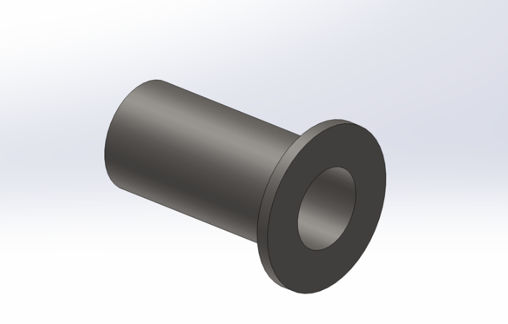
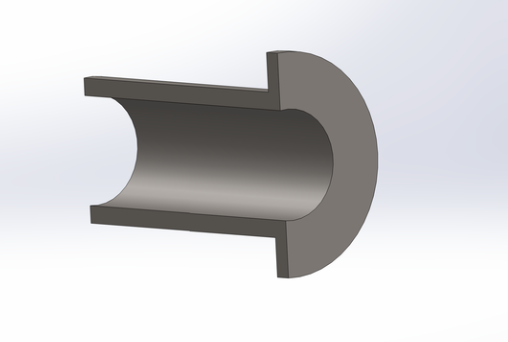
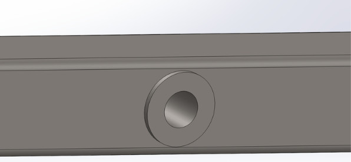

Seatbelt Insert Design — UCalgary FSAE
Frame-mounted inserts developed to secure harness positioning, reduce lateral movement, and support safer driver restraint integration.
Project Feature

Project Images




Project Biography
This project involved designing seatbelt inserts for the UCalgary Formula SAE vehicle to improve restraint positioning and ensure safe harness routing within the chassis. While the CAD design itself was relatively straightforward, the project served as an opportunity to focus on manufacturing processes.
I used this experience to develop hands-on skills in machining, particularly operating a lathe, and gained a deeper understanding of how design decisions translate into physical parts. Considerations such as tolerances, material selection, and manufacturability became central to the process.
This project highlighted the importance of bridging design and fabrication, and strengthened my ability to think beyond CAD by incorporating real-world manufacturing constraints into engineering decisions.